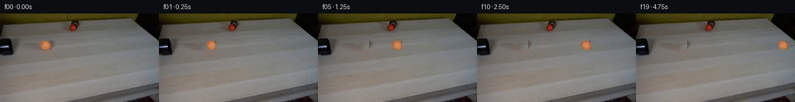

![首帧]()

Round 00
2026-11-04T22:15:58.160142+00:00像素候选变化代码 +270/−0inspection 更新
pixels fd774577c2b9295d · code cc0134e0fe4a0a74
查看本轮 generate.py 真实 diff
--- previous/generate.py +++ current/generate.py @@ -0,0 +1,270 @@ +#!/usr/bin/env python3 +"""PixelWorld-Text frame generation: orange tennis ball rolling across table. + +Generates 20 frames (256×144 RGB) showing an orange tennis ball rolling +from the left pipe opening across a wooden coffee table toward the right. + +Frame 00 is an exact copy of first_frame.png. +Frames 01-19 show the ball advancing rightward with constant deceleration. +""" + +import numpy as np +from PIL import Image +from pathlib import Path +import sys + +sys.path.insert(0, str(Path(__file__).parent)) +from artifact_io import save + +# ── Configuration ────────────────────────────────────────────────── +CASE_DIR = Path(__file__).parent +FIRST_FRAME_PATH = CASE_DIR / "first_frame.png" +FRAMES_DIR = CASE_DIR / "frames" +TMP_DIR = CASE_DIR / ".tmp" +H, W = 144, 256 +N_FRAMES = 20 + +# ── Load first frame ─────────────────────────────────────────────── +first = np.array(Image.open(FIRST_FRAME_PATH)) +assert first.shape == (H, W, 3) and first.dtype == np.uint8 + +# ── Ball parameters (measured from first_frame.png) ───────────────── +BALL_BBOX = (64, 43, 81, 59) # x0, y0, x1, y1 (inclusive) +BALL_CX_INITIAL = 72.6 # center x in frame 00 +BALL_CY = 51.2 # center y (constant, horizontal roll) +BALL_DIAMETER = 16 # approximate + +# ── Build ball sprite with soft alpha mask ────────────────────────── +def build_ball_sprite_and_mask(): + """Extract the orange ball from frame 00 with a soft alpha mask.""" + x0, y0, x1, y1 = BALL_BBOX + patch = first[y0:y1+1, x0:x1+1].astype(np.float32) + + # Compute expected table background by sampling left+right + table_left = first[y0:y1+1, max(0, x0-8):x0].astype(np.float32) + table_right = first[y0:y1+1, x1+1:min(W, x1+9)].astype(np.float32) + + # Build a local background estimate by blending left and right averages + bg_left_mean = table_left.mean(axis=1, keepdims=True) + bg_right_mean = table_right.mean(axis=1, keepdims=True) + + # Simple horizontal gradient for background + bg = np.zeros_like(patch) + for ix in range(patch.shape[1]): + t = ix / max(patch.shape[1] - 1, 1) + for iy in range(patch.shape[0]): + bg[iy, ix] = bg_left_mean[iy, 0] * (1 - t) + bg_right_mean[iy, 0] * t + + # Compute difference from background + diff = np.sqrt(((patch - bg) ** 2).sum(axis=2)) + + # Create alpha mask: 1.0 = ball, 0.0 = background + alpha = np.clip((diff - 5) / 25, 0, 1) + + # Erode the edges slightly for cleaner compositing + from scipy.ndimage import binary_erosion + hard_mask = alpha > 0.3 + hard_mask = binary_erosion(hard_mask, iterations=1) + alpha = alpha * hard_mask.astype(np.float32) + + return patch, alpha + +ball_sprite, ball_alpha = build_ball_sprite_and_mask() + +# ── Inpaint background behind ball in frame 00 ────────────────────── +def inpaint_ball_region(src_frame): + """Fill the ball region with table texture sampled from surroundings.""" + x0, y0, x1, y1 = BALL_BBOX + result = src_frame.copy() + + # Gather source texture patches from surrounding clean table area + # Left neighbor region (between pipe and ball) + left_src_x0 = max(0, x0 - 30) + left_src_x1 = x0 - 1 + # Right neighbor region + right_src_x0 = x1 + 1 + right_src_x1 = min(W - 1, x1 + 30) + # Above neighbor region … diff truncated; 183 more lines …